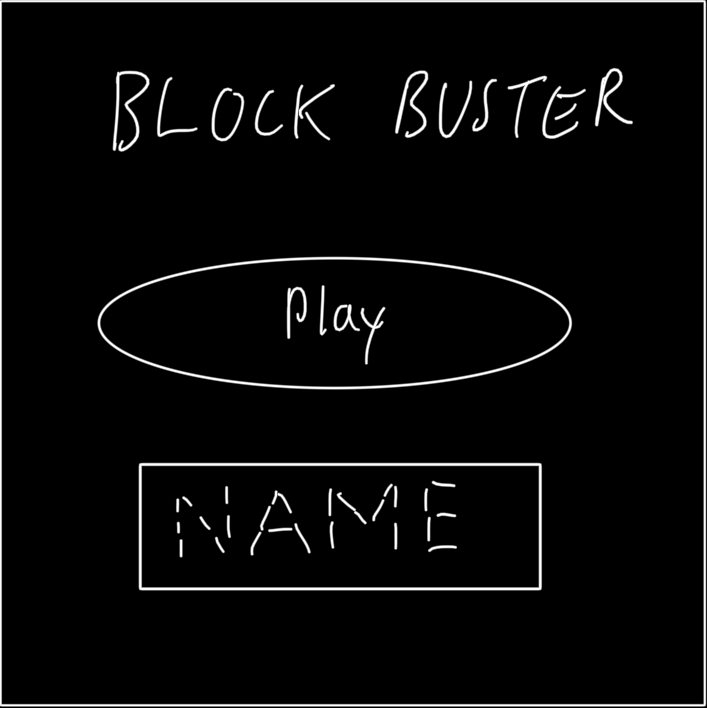
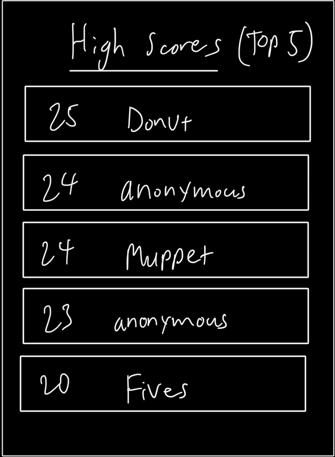
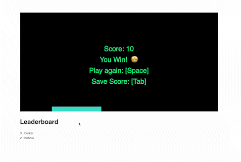

Projects
PlayBrosski! Play Harder!
FP0 Propsosal - Reworking My Atari Breakout Game
Description
For my final project, I plan on building on my Atari Breakout game from MP3 by adding a backend database to store high scores and obstacles to increase overall game complexity and difficulty.
Envisioned interface
 Project Versions
- Prototype: The prototype version of my game will focus on implementing the aforementioned high score feature with a working "evil" paddle that blocks the user's attempt to break all the blocks. The scoreboard will only display the top 5 players with their respective scores, regardless of their names. The high scores and menu interfaces will have barebones implementations with minimal styling.
- Final: The final prototype will mostly be focusing on refinements of both old and new features that are brought up in the prototype version, which would mean incorporating CSS styling if applicable. This game version will allow for unique usernames with their respective high scores instead of having duplicate usernames with different scores on the leaderboard.
Development Plan
- Set up Firebase and connect Firebase database to project app
- Implement main menu interface
- Implement leaderboard
- Finalize "evil" paddle functionality (Milestone 1: Prototype)
- Improve leaderboard with unique usernames
- Rework main menu to reflect unique username changes to leaderboard
- Finalize CSS styling for interfaces and objects (Milestone 2: Final)
Some unknowns
- Firebase documentation
- Incorporate "evil" paddle obstacle
Stretch Goals
- Allow user to see past top 5 high scores in the leaderboard
- Allow user to manually change game settings (number of blocks, speed of "evil" paddle(s), etc.)
- Improve ball physics
Final Prototype Writeup
Block Buster Game Prototype
Overview
For my final project in HCDE 438, I decided to continue working on my previous game based on Atari Breakout which can be found here!
The Development Process
I followed through most of the steps I outlined in the propsosal. First, I made sure I had Firebase set up correctly in my project since I anticipated Firebase was the biggest problem when prototyping. I knew I got Firebase to work with my prototype project when I was able to store and save user's data (usernames and their scores) on a leaderboard.
I continued to work through my outlined development plan by implementing my "evil" paddle/obsacle that is meant to prevent the user's attempt to clear blocks in the screen. After careful considerations, I decided to rework most of my game code as it originally uses mostly the p5.js library. Utilizing sprites in my game would prove to be a better choice of implementation as it was able to minimize a significant amount of game development code.
Project Scope
Going into this final project and its prototype, I knew that if I wanted to get the most out of the JS libraries I set out to use in the previous iteration, I had to incorporate spires from p5.play more into this project. As a result, a lot of effort was directed towards re-implementing game aspects (ball, blocks, & paddles) using p5.play instead of how the game was previously with mostly p5.js. I was not able to implement a main menu interface since most of my time and effort was invested into the aforementioned game aspects.
Time Management
Again, a lot of time in developing this prototype was focused on re-implementing the game with more p5.play. This was the main roadblock for this prototype iteration. I had to focus especially on overall sprite physics and interactions since using sprites for my game required understanding of how sprites from p5.play work in general.
Implementation Plan
Even though I was not able to implement a main menu interface for the prototype, I believe that through developing this new leaderboard feature and where I have it in this prototype can still work out. If I choose to leave the leaderboard where it's at right now, I will not need to do any final iterations and styling for any additional screens and interfaces. I would continue with my current development plan. But if I choose to pursue this menu interface, it would be one of the first action items for the final version.
Issue Deep Dive
An issue that came up with this prototype is figuring out the physics/interactions between sprites (ball, paddles, blocks) in my game. Initially, my spirte paddles and blocks would spin/rotate whenever the ball collides with them. After carefully looking over p5.play's referene page on spirte physics, I learned that if I wanted my sprites to maintain their default horizontal orientation, I must specify their 'collider' property to 'kinematic'.
Looking forward
I aim to continue iterating on the following for this prototype in my final iteration:
- Improve on ball collision physics as it is inconsistent
- Styling Leaderboard, Input, text and game content
- Implement adjustable screen sizes, if applicable
Kudos to the following:
- Firebase Documentation
- Allison Parrish's p5.play examples
- p5.js reference
- p5.play reference
- Branchwelder's template project that I used as a scaffold for deploying my prototype
- Hwa Jung for helping me set up and deploy this prototype with vite
Final Project Writeup
Block Buster Game
Overview
For my final project in HCDE 438, I iterated from my working prototype of my previous game based on Atari Breakout which can be found here!
The Development Process
I continued working on my Block Buster game by focusing on overall ball interactions across the board while attemping to add styles to the leaderboard and overall game environment. Even though I could have cloned my prototype repository, I decided to start over with the same initialization and onboarding process when I first started working on my prototype, which was to create a whole new repository and copying all essential code from the prototype into my new repository. I also wanted to gain more practice with Firebase again so I went through the entire process of creating a new project and app for my final iteration in Firebase. After setting up my app in Firebase, I continued working on improving ball collisions with blocks and paddles in-game.


Issue Deep Dive
An issue that I encountered throughout my various iterations of my game was that the game screen was never centered the way I wanted. This issue was apparaent in both my first iteration of the game and in the prototyping phase. After some trial and error in my final process of styling my game, I managed to make all elements in my game centered on the screen.


Ideas and Future Work
Even though this is my final project for HCDE 438, there are still ways which I can still iterate on. Games always have their bugs and flaws. Block Buster is no different, so besides the obvious ways to improve this game (e.g. game balancing), here are some ways I can further improve the game:
- Adding a button to submit user scores into the leaderboard
- Allowing users to change the difficulty of the game through multiple paddle obstacles and/or more blocks to break
- Incorporate additional controls (e.g. WASD & arrow keys) for paddle movement
Kudos to the following:
- p5.play reference
- Branchwelder's template project that I used as a scaffold for deploying my game
- Again, thanks Hwa Jung for reminding me how to set up and deploy this prototype with vite